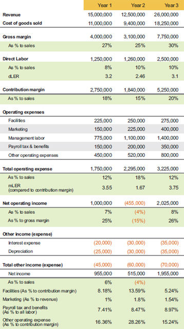
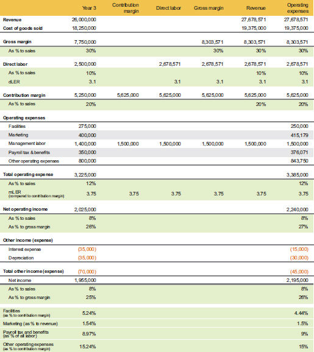
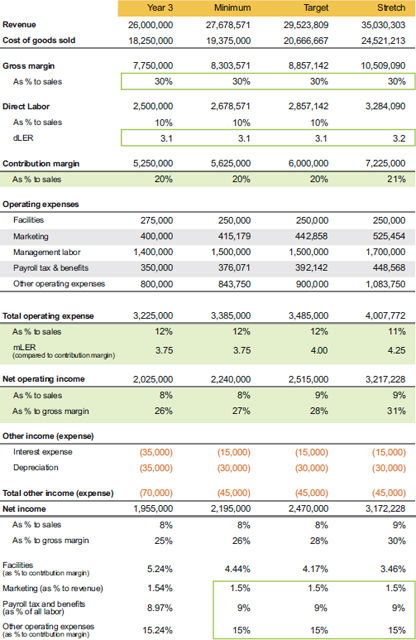

The Thinking Model example in this section shows the last three years of actual performance data in our Simple Numbers analytical format. The example business is a services contractor that coordinates other contractors and materials. Each contract is worth $500,000 or more in revenue, and the revenue can swing wildly depending on the company’s success in winning contracts. The contracts usually take 6 to 12 months to complete, and the company recognizes revenue as costs are incurred on contracts.
You can see in table 7.1 that revenue went down in year 2, yet the company’s direct labor costs stayed about the same. This is a great example of my launch capital concept, described in Chapter 6, because the company bet they could win the right contracts to increase revenue in year 3 if they increased their marketing spend (mainly bid and proposal costs) and beefed up their management team ahead of the awards to handle the significant increase in
Thinking model: Years 1 through 3

* dLER is direct labor efficiency ratio. mLER is management labor efficiency ratio.
volume. This was a bold move to say the least, but they were confident in their ability and had just enough cash and borrowing power to dig out of the year 2 hole. As we review their performance throughout this example, we will keep track to see if their launch capital spend met the 50% return standard.
Notice in table 7.1 that direct labor stayed essentially the same from year 1 to year 2. This was a strategic decision that is hard for entrepreneurs to make. They had built a team of employees they wanted to keep, and the company believed they would need the team in year 3. If they had trimmed their staff to keep in line with year 1 performance, they would have cut direct labor by $291,250 to get their direct labor efficiency ratio (dLER) up to $3.20—that is, $3.20 of gross margin for every direct labor dollar spent—which was their performance in year 1. This demonstrates the two labor plays in business: you either flex the labor to what you sell, or you sell to cover your committed labor level. The business in this example committed to their labor level and increased sales to cover it, which took a year. Since the sales to cover the excess labor did not occur in the same year, their overspending of labor essentially became launch capital. They did not have to spend this money; they chose to spend it.
The next increase you can see in table 7.1 is marketing. The increase was due mostly to travel and contractor costs to assist in the bidding and proposal work. The increase of $75,000 from year 1 to year 2 is launch capital because it was spent to move the business above the current revenue level.
You can see in table 7.1 that the company’s management labor cost also increased; like direct labor, this increase was a choice, not a need. The company knew it would need to fill new leadership roles if they were to take the company to the next level. This addition of management labor is a critical point that I refer to as the black hole (see Chapter 6). Recall that the black hole is the journey between $1 million and $5 million in revenue or gross margin in some circumstances. I have found that when gross margin is below 40%, it becomes the true top line of the business. For the example in table 7.1, the company’s gross margin percentage to sales was 30% or less—$4 million in year 1—and was their true top line. If you ever want to compare your business to another business in a different industry, use gross margin as the top line.
The company realized they had cheated the management labor bucket in getting to a gross margin of $4 million in year 1. They knew they would need to rebuild their management team to get to the next level, dropping some team members who could not grow further in their roles and adding key team members to cover tasks that had previously been part-time responsibilities of overworked leaders. This is the best way to traverse the black hole. The fix is not quick, and it often carries the pain of a losing year, even if you get it right; it could take a couple of years if you get it wrong.
For launch capital purposes, the catalytic spend (or bet) on additional management labor in year 2 was $325,000 (table 7.1). The company did not need that increase to maintain where they were, so the total increase included raises, bonuses, and new people minus employees who left. I generally do not include the increases in payroll tax and benefits, since this cost is a reaction to the new management labor spend, but you would not be wrong if you wanted to include it.
Other operating expenses also increased due to some one-time consultants who helped with the transition, so another $50,000 is added to the launch capital tally.
Let’s recap the launch capital spends in year 2 (table 7.1):
Let’s evaluate the company’s launch capital spend in year 2. They invested $741,250, and the profit increased from $955,000 in year 1 to $1,955,000 in year 3, an increase of $1,000,000. To measure the return, take the increase in profit of $1,000,000 and divide it by the cost of $741,250 to get the annual return of 135%. This company placed a risky bet, but it definitely paid off! These are the kinds of risks entrepreneurs take all the time to grow their business and create wealth. Incremental bets throughout the life of the business are far more critical to its success than any initial investment.
Before we set the company’s next performance target, there are a few things to note on year 3 in table 7.1:
I refer to other operating expenses as a lagging variable cost. If the company experiences a downturn, you cannot simply shut off these expenses; similarly, they do not immediately increase when the company grows. These expenses often lag six months to a year.
I have never found it helpful to forecast at the line item level. If a client uses line items, I can usually beat their accuracy by using a percentage and identifying which discretionary decisions in this cost pool will be significantly different.
Setting the Next Target: Levels of Attainment
Most entrepreneurs continually look for next year’s target, but remember that you can use the targeting process described in this chapter any time you need to make a business change to capture an opportunity or to correct underperformance. My preferred approach is to view these targets as levels of attainment—which I call the minimum, target, and stretch levels—that could occur on a rolling 12 basis in any given month. Through monthly forecasting, you can have an idea of when you might hit the targets, but we all know that sometimes plans do not turn out as expected. If you use the minimum, target, and stretch levels to drive bonus plans, the levels will generally be dependent on time, but you could establish a one-time bonus when a key level is hit on a rolling 12.
To establish a working area in the Thinking Model, we will take the lessons we learned from the past three years of performance. We look for the company’s best data points, then establish our planned performance levels.
We start with setting the minimum level of attainment. For illustration, table 7.2 shows only year 3, which is carried over from table 7.1.
This plan is developed using the Simple Numbers bottom-up targeting process. After studying how entrepreneurs really think, we learned that most of them start with what they want to spend money on and work up from there. The most common thing they want to spend money on is labor to get the job done.
Tables 7.2 and 7.3 break down each step in the following bottomup targeting process, but in practice this is all done at one time. The results from the steps are inserted into table 7.3, which contains columns for the minimum, target, and stretch levels of attainment. The calculations occur in the following order:
1. Identify the management team’s annual wages and, from history, establish the mLER you want to hold them accountable to.
2. From table 7.2, multiply the management labor contribution margin times mLER to get the contribution margin for the minimum column in table 7.3.
3. Once contribution margin is established, we estimate direct labor needs.
a. Determine the expected level of dLER. For the minimum level, I usually set it at the previous year’s level unless there are anomalies that impact it either way. In our example, we set the minimum level the same as year 3; that is, $3.10.
Thinking Model: Working area for targeting process

b. We know both contribution margin and dLER, so from table 7.3 in the minimum column, the formula to calculate direct labor dollars is contribution margin divided by (dLER minus 1.00):
$5,625,000 / (3.10 – 1.00) = $2,678,571
That is the hardest math I will make you do! Just remember to solve inside the parentheses first, then solve the rest of the equation.
4. Gross margin (minimum column in table 7.3) is found by adding direct labor and contribution margin.
$2,678,571.43 + $5,625,000.00 = $8,303,571.43
Gross margin is assumed to remain the same until we see it move. As I said before, it is more important to build a target based on gross margin dollars, regardless of revenue; however, I agree that the minimum level of gross margin percentage needs to be acceptable.
5. Revenue is simply gross margin dollars divided by gross margin as a percentage to sales (table 7.3, minimum column).
$8,303,571.43 / 0.3 = $27,678,571.43
6. Once you know revenue, labor, and contribution margin, you predict operating expenses based on percentages (shown at the bottom of tables 7.2 and 7.3); the exception is facilities, which I usually estimate since it changes only by choice.
Thinking model: Minimum, target, and stretch levels

Now that you have a grasp of how the math works and its sequence in a single attainment level, we can explore how all three levels work together. But before we move on to the target level, let’s review some key points about establishing the minimum level: